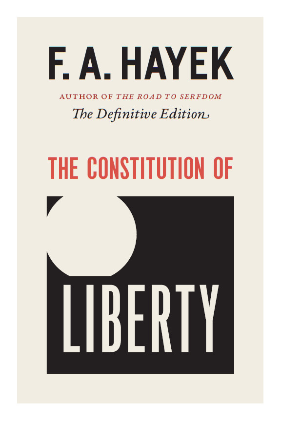
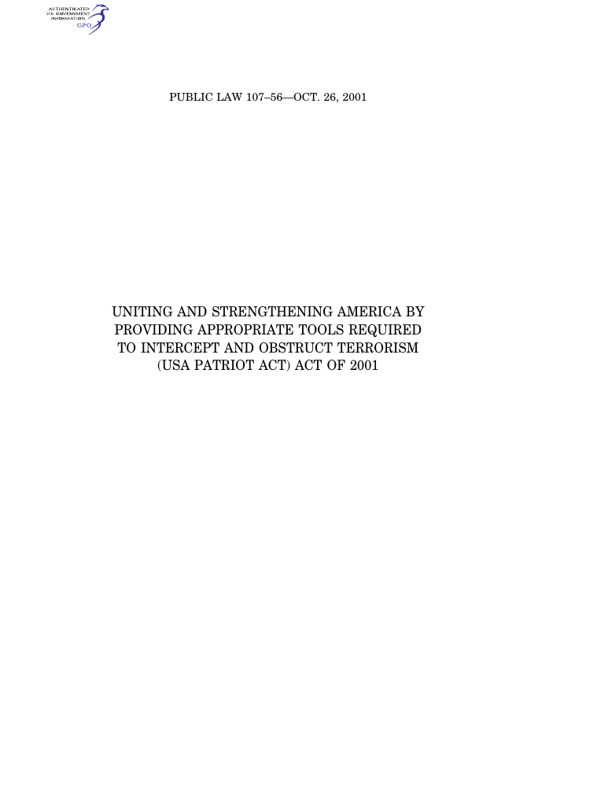

1:26:32 · 7 OPERE
Un'interpretazione del cap. XIV di "The Constitution of Liberty" di F. A. Hayek.
Il filo del discorso
Il contributo propone una lettura polemica del capitolo XIV di The Constitution of Liberty di Friedrich A. von Hayek, dedicato alle salvaguardie della libertà individuale. Dopo una lunga premessa sull’autorità delle cornici mediatiche, sull’originalità e sul dogmatismo, il relatore costruisce una genealogia del neoliberismo e annuncia un metodo di lettura del possibile sottotesto: ciò che nel libro appare una difesa della libertà viene interpretato anche come una mappa dei punti in cui essa potrebbe essere aggirata.
Leggi la sintesi completaRiduci la sintesi
Il paragone con la lettura foscoliana del Principe chiarisce il carattere deliberatamente inverso di questa interpretazione. Il confronto segue rule of law, certezza delle norme, uguaglianza, sfera privata, discrezionalità amministrativa e controllo giudiziario. Il relatore applica questi temi alle politiche pandemiche, alla comunicazione pubblica e all’integrazione europea. La scheda distingue il suo giudizio dalla posizione esposta nel libro e corregge le confusioni fra rule of law e precedente, fra uguaglianza giuridica e uguaglianza materiale e fra l’esempio bellico e il più ampio tema delle eccezioni. Le analogie con i totalitarismi e le accuse di un controllo occulto restano attribuite. Il finale torna agli slogan, alla memoria delle generazioni e al concetto frommiano di consumatore, quindi presenta il Cile dei Chicago Boys come avvertimento per il futuro europeo. Questa conclusione è una tesi politica del relatore, non una previsione economica verificata. La lettura permette soprattutto di interrogare lo scarto fra garanzie dichiarate, loro applicazione e interpretazione dei testi, mantenendo separate citazione, inferenza e cronaca.
I libri nel discorso

The Constitution of Liberty (La società libera)
Note sul riferimento
University of Chicago Press · Definitive Edition 2011 · ISBN 9780226315379: University of Chicago Press · Definitive Edition 2011 · ISBN 9780226315379
Copertina autentica dell’edizione definitiva inglese 2011 curata da Ronald Hamowy, del libro uscito nel 1960; non edizione materiale del video accertata. Capitolo XIV parte del volume, non libro a sé.
Riferimento ricavato dalla trascrizione automatica.

Campbell’s Soup Cans
Note sul riferimento
Riproduzione della serie Campbell’s Soup Cans: Serie del 1962: acrilico e smalto metallico su tela, 32 pannelli di 50,8 × 40,6 cm ciascuno; MoMA, inventario 476.1996.1–32.
Riproduzione museale autentica dei 32 dipinti disposti su quattro file di otto, con barattoli rossi e bianchi e gusti differenti. È un’immagine dell’opera, non una copertina di libro. Crediti dichiarati dal MoMA: Andy Warhol Foundation / ARS, NY / TM Licensed by Campbell’s Soup Co. Il riferimento alla serie è probabile: Warhol realizzò anche altre opere con questi barattoli.
Riferimento ricavato dalla trascrizione automatica.

Il Principe
Note sul riferimento
Copertina: Feltrinelli · 2013 · a cura di Ugo Dotti
Immagine autentica dell’opera, controllata visivamente; l’edizione di riferimento non è attribuita al filmato.
Riferimento ricavato dalla trascrizione automatica.

Dei sepolcri
Identificazione probabile
Note sul riferimento
Copertina della raccolta Rime: Feltrinelli · Rime · 2018 · a cura di Marco Cerruti
Copertina autentica di Rime, raccolta comprendente Dei sepolcri con le note dell’autore; il carme è una delle opere contenute, non il titolo del volume fotografato.
Riferimento ricavato dalla trascrizione automatica.

La via della schiavitù
Note sul riferimento
Copertina: Rubbettino, Biblioteca Austriaca, 2011, prefazione di Raffaele De Mucci, 296 pagine; ISBN 9788849830842. Originale The Road to Serfdom, 1944.
Copertina autentica Rubbettino con autore, titolo e prefazione leggibili, corde e oggetti segnati da parole sul potere. La citazione non dimostra l’uso di questa edizione.
Riferimento ricavato dalla trascrizione automatica.

USA PATRIOT Act of 2001 (Public Law 107–56)
Note sul riferimento
Congress.gov / GPO · pagina di titolo del testo originale, 26 ottobre 2001: Congress.gov / GPO · pagina di titolo del testo originale, 26 ottobre 2001
Riproduzione integrale della prima pagina del PDF ufficiale, con impaginazione originale: pagina di titolo del documento normativo, non copertina editoriale.
Riferimento ricavato dalla trascrizione automatica.

Costituzione della Repubblica Italiana
Note sul riferimento
Copertina dell’edizione Intra aggiornata al 2023: Intra · 2023 · introduzione di Umberto Vincenti
Copertina autentica del testo integrale, aggiornata alla legge costituzionale 26 settembre 2023 n.1. È successiva al filmato del 2019 e non rappresenta la versione storica letta dal relatore. Umberto Vincenti firma l’introduzione.
Riferimento ricavato dalla trascrizione automatica.